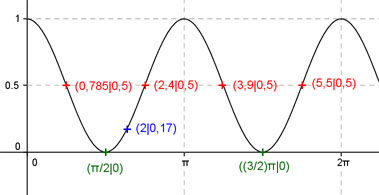

Aufgabe 210 Ergänzen Sie die Wertetabelle für x zwischen 0 und 2π: y = cos2 x x 2 0,785 oder 2,4 oder 3,9 oder 5,5 y 0,17 0,5 Amplitude = 0,5 ; Periode = π Berechnung der Nullstellen: cos2 x = 0 |√ --> cos x = 0 --> x = π/2 + k * π mit k = 0, 1, 2 --> x1 = π/2 oder 90° x2 = (3/2)π = 279°  Funktionswert an einer Stelle x ermitteln: 2 * 180° x = 2 oder ---------- = 114,6° π f(2) = cos2 2 = cos 2 * cos 2 = cos2 114,6° = 0,17 gerundet. Berechnung der x-Werte für y = f(x) = 0,5 f(x) = 0,5 eingesetzt, existiert zweimal zwischen 0 und π bzw. 0° und 180° und zweimal zwischen π und 2π bzw. 180° und 360° (siehe Graph). cos2 x = 0,5 |√ --> cos x = 0,707 --> x1 = arc cos 0,707 = 0,785 = π/4 oder 45° x2 = π/4 + π = (5/4)π = 3,9 oder 223,45° x3 = (π - π/4) = (3/4)π = 2,4 oder 137,5° x4 = (π + (3/4)π) = (7/4)π = 5,5 oder 315,1° gerundet.